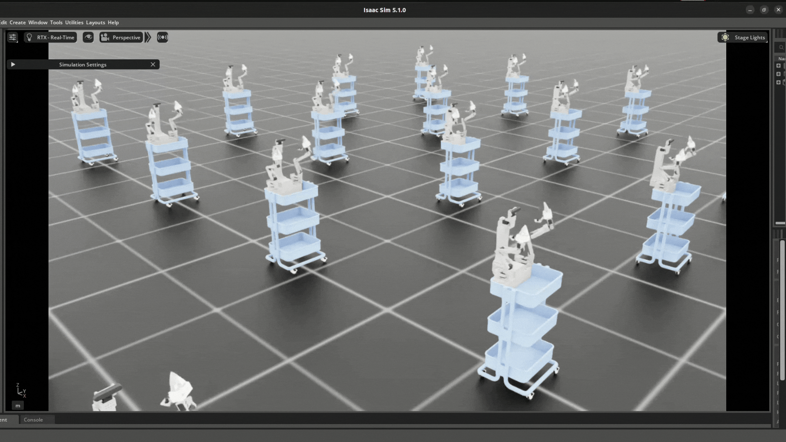
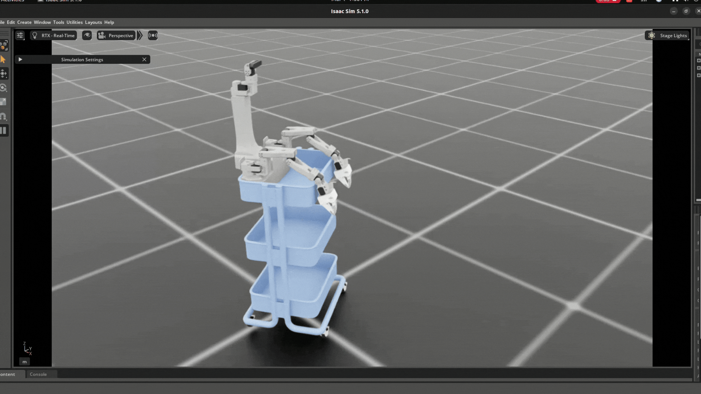

SO-101 Sim-to-Real Workshop
Train an SO-101 robot from simulation to real-world deployment on NVIDIA DGX Spark (ARM64 Blackwell), using Isaac Sim, LeRobot, and GR00T.

This repository is a DGX Spark (ARM64) adaptation of the official NVIDIA Sim-to-Real SO-101 Workshop. It provides:
- ARM64-patched Dockerfiles for both simulation and real robot containers
- One-click build and launch scripts for DGX Spark
- Support for both GR00T N1.6 (stable) and N1.7 (latest)
- All Python packaging fixes needed to run on aarch64
The complete pipeline:
- Simulate — Isaac Sim + IsaacLab environments for the SO-101 robotic arm
- Collect — Keyboard teleoperation with automatic LeRobot dataset recording
- Train — Fine-tune a GR00T vision-language-action model on collected data
- Deploy — Transfer the trained policy to a real SO-101 robot

Requirements
Hardware
| Component | Specification |
|---|---|
| Platform | NVIDIA DGX Spark (GB10) |
| Architecture | aarch64 (ARM64) |
| GPU | Blackwell, ~92 GB unified memory |
| Real robot (optional) | SO-101 arm + Feetech servos + USB camera |
Software
| Software | Version |
|---|---|
| OS | Ubuntu 24.04 LTS |
| CUDA Toolkit | 13.0+ (N1.6) / 13.2+ (N1.7) |
| Docker | Latest |
| NVIDIA Container Toolkit | Latest |
| conda / miniforge | Latest (for training step) |
Version stacks
This repository supports two version stacks. Choose based on your needs:
| N1.6 (stable) | N1.7 (latest) | |
|---|---|---|
| Isaac Sim | 4.5+ | 6 beta |
| Isaac Lab | 2.3.2 | 3.0.0-beta1 |
| GR00T | N1.6 | N1.7 |
| LeRobot | 0.4.3 | 0.5.2+ |
| Python | 3.10 | 3.12 |
| PyTorch | 2.7.0 | 2.10.0 |
Verify your setup
# Docker installed?
docker --version
# GPU accessible from Docker?
docker run --rm --gpus all nvidia/cuda:13.0.0-base-ubuntu24.04 nvidia-smi
# Architecture correct?
uname -m
# Expected: aarch64Architecture
┌───────────────────────────────────────────────────────────────┐
│ DGX Spark (ARM64) │
│ │
│ ┌────────────────────┐ ┌────────────────────────────┐ │
│ │ Sim Container │ │ Real Robot Container │ │
│ │ (teleop-docker) │ │ (real-robot) │ │
│ │ │ │ │ │
│ │ Isaac Sim │ │ GR00T Policy Server │ │
│ │ Isaac Lab │ │ SO-101 Hardware Control │ │
│ │ LeRobot │ │ Feetech Servo SDK │ │
│ │ │ │ │ │
│ │ Teleoperation ───┼──────┼──▶ Policy Inference │ │
│ │ Data Recording │ │ Action Execution │ │
│ └────────────────────┘ └────────────────────────────┘ │
│ │ │ │
│ ▼ ▼ │
│ HuggingFace Hub Real SO-101 Robot │
└───────────────────────────────────────────────────────────────┘Clone and prepare
Clone
git clone https://github.com/Lakesenberg/xlerobot_sim2real_isaacsim.git
cd xlerobot_sim2real_isaacsim
git checkout Sim-to-Real-SO-101-WorkshopCreate Isaac Sim cache directories
These directories are mounted into the container so that shader compilation caches, pip downloads, and logs persist between container restarts.
mkdir -p ~/docker/isaac-sim/cache/{kit,ov,pip,glcache,computecache}
mkdir -p ~/docker/isaac-sim/{logs,data,documents}Create output directories
mkdir -p outputs datasetsConfigure robot ports (real robot only)
If you have physical SO-101 hardware, edit docker/env with your USB port and camera device numbers:
docker/env file reference
export LEROBOT_CALIB=.cache/huggingface/lerobot/calibration
export TELEOP_PORT=/dev/ttyACM1 # Leader arm USB port
export ROBOT_PORT=/dev/ttyACM0 # Follower arm USB port
export TELEOP_ID=orange_teleop # Leader arm identifier
export ROBOT_ID=orange_robot # Follower arm identifier
export CAMERA_GRIPPER=0 # Gripper camera device index
export CAMERA_EXTERNAL=4 # External camera device indexBuild the simulation container
The simulation container bundles Isaac Sim, Isaac Lab, and LeRobot into a single Docker image. The ARM64-patched Dockerfiles handle all platform-specific dependency issues automatically.
# Build both containers (sim + real) in one command
./build_n17_arm64.sh
# Or build only the simulation container
docker build -t teleop-docker:n17 -f docker/sim/Dockerfile.n17.arm64 .Base image: nvcr.io/nvidia/isaac-lab:3.0.0-beta1 (Isaac Sim 6 beta, Python 3.12)
# Build both containers (sim + real) in one command
./build_arm64.sh
# Or build only the simulation container
docker build -t teleop-docker -f docker/sim/Dockerfile.arm64 .Base image: nvcr.io/nvidia/isaac-lab:2.3.2 (Isaac Sim 4.5+, Python 3.10)
Build the real robot container
The real robot container includes the GR00T policy inference server, Feetech servo SDK, and calibration tools.
docker build -t real-robot:n17 -f docker/real/Dockerfile.n17.blackwell.arm64 .Base: nvidia/cuda:13.2.2-devel-ubuntu24.04, Python 3.12, GR00T N1.7
docker build -t real-robot -f docker/real/Dockerfile.blackwell.arm64 .Base: nvidia/cuda:13.0.0-devel-ubuntu24.04, Python 3.10, GR00T N1.6
flash-attn compilation step is the slowest (limited to MAX_JOBS=2 to avoid OOM).Launch the simulation
./run_teleop_n17_arm64.sh./run_teleop_arm64.shThe launch script handles all ARM64-specific environment variables (LD_PRELOAD, GLIBC_TUNABLES), X11 forwarding, GPU passthrough, and volume mounts automatically.
What the launch script does
The script runs docker run with these ARM64-critical flags:
| Flag | Purpose |
|---|---|
-e LD_PRELOAD=...libgomp.so.1 | Pre-loads OpenMP runtime to ensure TLS allocation succeeds |
-e GLIBC_TUNABLES=...tls=2048 | Expands static TLS region for Isaac Sim's many shared libraries |
--privileged --gpus all | Full GPU and USB device access |
-v .../cache/kit:... | Persists shader compilation cache between restarts |
-v $(pwd)/source:... | Mounts source code for live editing |
The container entrypoint automatically runs pip install -e on the sim_to_real_so101 package.
Verify the environment
Inside the container, run these checks:
Check CUDA
python -c "import torch; print(f'CUDA: {torch.cuda.is_available()}, Device: {torch.cuda.get_device_name(0)}')"Expected: CUDA: True, Device: NVIDIA ...
List available environments
list_envsTest with zero actions
zero_agent --task Lerobot-So101-Teleop-Vials-To-Rack --num_envs 1 --enable_camerasYou should see the Isaac Sim GUI with a SO-101 arm, a table with vials, and a yellow rack. Press Ctrl+C to exit.
Test with random actions
random_agent --task Lerobot-So101-Teleop-Vials-To-Rack --num_envs 1 --enable_camerasCollect teleoperation data
Use keyboard teleoperation to control the simulated SO-101 arm and record demonstrations. The recorded data is saved in LeRobot dataset format.
Start teleoperation with recording
lerobot_agent \
--task Lerobot-So101-Teleop-Vials-To-Rack-DR \
--num_envs 1 \
--enable_cameras \
--repo_id <your-hf-username>/so101-vials-sim-drThe -DR variant enables domain randomization (lighting, colors, camera angles), which significantly improves sim-to-real transfer.
Recording workflow
- Press B to begin recording
- Use keyboard controls to pick up a vial and place it in the yellow rack
- Press N when the task succeeds (resets the scene)
- Press R if you fail (resets without saving)
- Repeat for 50–100 successful episodes
- Press
Ctrl+Cto stop
Push dataset to HuggingFace
# Login to HuggingFace (first time only)
huggingface-cli login
# Push the recorded dataset
lerobot_push_dataset --repo_id <your-hf-username>/so101-vials-sim-drTrain a GR00T policy
# N1.7 supports Python 3.12 (ships with Ubuntu 24.04)
conda create -n gr00t python=3.12 -y
conda activate gr00t
# Clone GR00T N1.7
git clone https://github.com/NVIDIA/Isaac-GR00T.git ~/Isaac-GR00T
cd ~/Isaac-GR00T
git checkout 4b1dca9d88d2a0b9ea5a65aa61c82ff89f5c4f0e
# Install
pip install -e .# N1.6 requires Python 3.10 (DGX Spark ships 3.13, which is incompatible)
conda create -n gr00t python=3.10 -y
conda activate gr00t
# Clone GR00T N1.6
git clone https://github.com/NVIDIA/Isaac-GR00T.git ~/Isaac-GR00T
cd ~/Isaac-GR00T
# Install the bundled ARM64 torchcodec wheel (not available on PyPI)
pip install scripts/deployment/dgpu/wheels/torchcodec-0.10.0a0-cp310-cp310-linux_aarch64.whl
# Install
pip install -e .Fine-tune on your dataset
python scripts/train.py \
--dataset_repo_id <your-hf-username>/so101-vials-sim-dr \
--num_epochs 50 \
--batch_size 32 \
--output_dir ~/sim2real/models/groot-so101-vialsTraining takes approximately 1–4 hours depending on dataset size. The DGX Spark's 92 GB unified memory allows batch sizes of 32 or higher.
Deploy to real SO-101
9.1 Launch the real robot container
./run_real_robot_n17_arm64.sh./run_real_robot_arm64.sh9.2 Calibrate the robot
cd /workspace/Isaac-GR00T/gr00t/eval/real_robot/SO100
# Run calibration procedure
python so101_control.py --port /dev/ttyACM0 --id my_robot --calibrate
# Verify calibration quality
python so101_check_calibration.py --id my_robot
# Test manual joint control
python so101_manual_control.py --port /dev/ttyACM0 --id my_robot9.3 Run policy inference
You need two terminals inside the container. Open a second terminal with:
docker exec -it real-robot /bin/bashTerminal 1 — Start the GR00T policy server
cd /Isaac-GR00T
python scripts/serve.py --model_path /workspace/models/groot-so101-vialsTerminal 2 — Run the robot
cd /workspace/Isaac-GR00T/gr00t/eval/real_robot/SO100
python so101_eval.py \
--robot_port /dev/ttyACM0 \
--robot_id my_robot \
--server_url tcp://localhost:5555 \
--task "pick up the vial and place it in the yellow rack"Available environments
Task environments
| Environment ID | Description |
|---|---|
Lerobot-So101-Teleop-Vials-To-Rack | Main task — pick up vial, place in yellow rack |
Lerobot-So101-Teleop-Vials-To-Rack-DR | Same task with domain randomization (recommended for training) |
Evaluation environments
| Environment ID | Description |
|---|---|
Lerobot-So101-Teleop-Vials-To-Rack-Eval | Fixed appearance, no domain randomization |
Lerobot-So101-Teleop-Vials-To-Rack-DR-Eval | Full domain randomization |
Debug environments
| Environment ID | Description |
|---|---|
Lerobot-So101-Teleop-Base | Basic teleop, no task objects |
Lerobot-So101-Teleop-Task | Lightbox + camera testing |
CLI commands
| Command | Description |
|---|---|
list_envs | List all registered environments |
zero_agent | Run environment with zero actions (debug) |
random_agent | Run environment with random actions (debug) |
lerobot_agent | Teleoperate and record dataset |
lerobot_eval | Evaluate trained policy in simulation |
lerobot_push_dataset | Upload dataset to HuggingFace Hub |
Teleoperation controls
Keyboard
| Key | Action |
|---|---|
| B | Begin recording |
| N | Mark success and reset |
| R | Mark failure and reset |
| W / S | Forward / backward |
| A / D | Left / right |
| Q / E | Up / down |
| U / O | Gripper open / close |
ARM64 fixes applied
The following fixes are already applied in the ARM64 Dockerfiles. This section is for reference only.
| # | Issue | Fix | File |
|---|---|---|---|
| 1 | torchcodec version not found on ARM64 PyPI | Pin compatible version range | Dockerfile.arm64 |
| 2 | pip silently replaces CUDA PyTorch with CPU-only wheel | Dynamically capture version from base image | Dockerfile.arm64 |
| 3 | triton version not available for aarch64 | Remove from pyproject.toml | Dockerfile.*.arm64 |
| 4 | cannot allocate memory in static TLS block | LD_PRELOAD + GLIBC_TUNABLES | run_*_arm64.sh |
| 5 | FFmpeg binary is x86_64, not ARM64 | Download linuxarm64 build | Dockerfile.arm64 |
| 6 | GR00T requires specific Python + hidden wheel | N1.6: Python 3.10 + bundled wheel; N1.7: Python 3.12 | Dockerfile.*.arm64 |
| 7 | sim_to_real_so101 missing __init__.py | Created package root __init__.py | source/ |
| 8 | scripts/ missing __init__.py (entry points fail) | Created scripts/__init__.py | source/ |
| 9 | requires-python >= 3.11 blocks Python 3.10 | Changed to >= 3.10 | pyproject.toml |
Troubleshooting
cannot allocate memory in static TLS block
The ARM64 dynamic linker's static TLS region is too small for Isaac Sim. Use the launch scripts (./run_teleop_*_arm64.sh) which set LD_PRELOAD and GLIBC_TUNABLES automatically.
torch.cuda.is_available() returns False
pip replaced NVIDIA's CUDA-enabled PyTorch with a CPU-only wheel during the Docker build. Rebuild using the ARM64 Dockerfile, which dynamically captures the base image's PyTorch version.
No matching distribution found for torchcodec
ARM64 PyPI has different version ranges than x86_64. The ARM64 Dockerfiles already pin compatible versions.
ModuleNotFoundError: No module named 'sim_to_real_so101'
The package was missing __init__.py at the root level. This is fixed in this repository. Verify the file exists:
ls source/sim_to_real_so101/__init__.pyIsaac Sim takes more than 5 minutes to start
Normal on first launch — it is compiling shaders. The cache mount ensures subsequent starts are much faster.
No GUI window appears
Make sure you ran xhost + before launching the container. The launch scripts do this automatically.
GR00T install fails with Python 3.12+ (N1.6 only)
GR00T N1.6 requires Python 3.10. Use conda create -n gr00t python=3.10. GR00T N1.7 supports Python 3.12.
Project structure
Files marked in green are additions to the original workshop repository.